UDN
Search public documentation:
MaterialExamplesCH
English Translation
日本語訳
한국어
Interested in the Unreal Engine?
Visit the Unreal Technology site.
Looking for jobs and company info?
Check out the Epic games site.
Questions about support via UDN?
Contact the UDN Staff
日本語訳
한국어
Interested in the Unreal Engine?
Visit the Unreal Technology site.
Looking for jobs and company info?
Check out the Epic games site.
Questions about support via UDN?
Contact the UDN Staff
材质实例
概述
概念与技术
高光
高光就是由于光线在表面上反射所产生的高亮显示部分。一般情况下，表面越薄，高光越小越亮。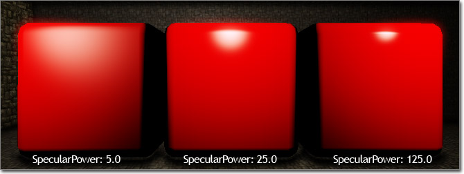
材质节点上的高光输入通道用于控制高光的颜色和亮度，而 SpecularPower 输入通道可以控制高光衰减或紧密性。环境地图
可以轻而易举地实现环境贴图或反射贴图，应用实时反射或通过使用预渲染的立方体贴图为对象提供反射环境的外观。 将通过变换（目标 -> 世界）传递的反射向量表达式作为贴图样本的 UV 贴图坐标，分配环境贴图。它会将立体贴图（RenderToTextureCube 或静态立体贴图）映射到网格物体的表面，使其看上去可以反光。
将通过变换（目标 -> 世界）传递的反射向量表达式作为贴图样本的 UV 贴图坐标，分配环境贴图。它会将立体贴图（RenderToTextureCube 或静态立体贴图）映射到网格物体的表面，使其看上去可以反光。
 RenderToTexture 页面包含有关设置 SceneCaptureCubeMapActor 进行实时反射以及使用 SceneCaptureCubeMapActor 保存静态截图 的信息。
要手动创建一个新的立体贴图，请在内容浏览器中右击，从关联菜单中选择 新 TextureCube 。
RenderToTexture 页面包含有关设置 SceneCaptureCubeMapActor 进行实时反射以及使用 SceneCaptureCubeMapActor 保存静态截图 的信息。
要手动创建一个新的立体贴图，请在内容浏览器中右击，从关联菜单中选择 新 TextureCube 。
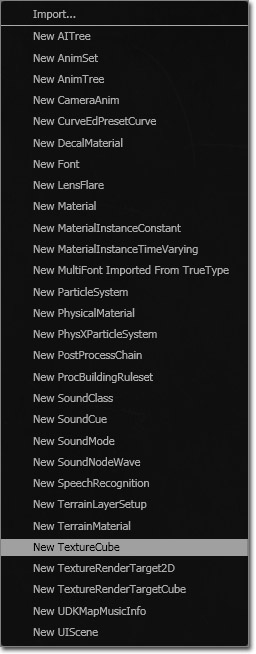
另一个选择是在 内容浏览器中点击 新建 按钮，然后在 工厂 组合框中选择 TextureCube 选项。 然后导入您的环境中的六个图片，为它们分配新 TextureCubeFace 的 Face Neg/Pos X/Y/Z 属性中提供的插槽。对于 CubeTexture 的每一个面，它们都会将图片的顶部作为贴图的最顶部，而顶部面和底部面拥有相同的顶部方向，如下图所示：
然后导入您的环境中的六个图片，为它们分配新 TextureCubeFace 的 Face Neg/Pos X/Y/Z 属性中提供的插槽。对于 CubeTexture 的每一个面，它们都会将图片的顶部作为贴图的最顶部，而顶部面和底部面拥有相同的顶部方向，如下图所示：
 在将贴图分配到 TextureCube 中时，请将它们放置在下面的插槽中：
在将贴图分配到 TextureCube 中时，请将它们放置在下面的插槽中：
 只要 TextureCube 设置完成，就可以在材质编辑器中将其赋给新 TextureSample。
此时您可以将 TextureSample 的 RGB 输出端连接到材质的 Diffuse 输入通道，但是可能会出错。要纠正这些错误，您将需要添加一个新的 ReflectionVector 表达式和一个新的 Transform 表达式。将 ReflectionVector 的输出端连接到 Transform 的输入端，然后将 Transform 的输出端连接到 TextureSample 的 UV 输入端。
只要 TextureCube 设置完成，就可以在材质编辑器中将其赋给新 TextureSample。
此时您可以将 TextureSample 的 RGB 输出端连接到材质的 Diffuse 输入通道，但是可能会出错。要纠正这些错误，您将需要添加一个新的 ReflectionVector 表达式和一个新的 Transform 表达式。将 ReflectionVector 的输出端连接到 Transform 的输入端，然后将 Transform 的输出端连接到 TextureSample 的 UV 输入端。
蒙板
蒙板是一个灰度贴图，或是贴图的单个通道（R、G、B 或 A），用于限制材质中特效作用区域。通常，蒙板将会包含在另一个贴图的单个通道中，例如，漫反射或法线贴图的 alpha 通道。这是利用未使用的通道并使在材质中北采样的贴图数最少的好方法。从技术上讲，任何贴图的任何通道都可以作为蒙板使用。 蒙板示例，如下图所示：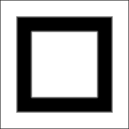
使用贴图蒙板的通用方法包括使用乘法表达式将某个值乘以蒙板的值，有效通知材质只有在蒙板中的值大于 0.0 的时候才可以使用这个值。根据不同的蒙板值，效果的强度值也会有所不同。 这项技术通常与具有发光部分的材质结合使用。在发光的部分为白色（或者是不断变化的灰色调）而其他部分为黑色的地方创建自发光蒙板。这样做的好处是不仅允许您限制可以发光的地方，您还可以全权控制材质内部发光的颜色，它使您可以快速更改颜色，无需贴图美术师进行更改并重新导入贴图。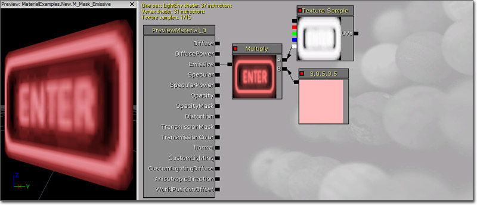
蒙板的另一个常见用处是通过将蒙板作为 LinearInterpolate 表达式的 Alpha 输入端混合两个效果。这样做的结果是在蒙板为白色的地方使用一个效果或值，在蒙板为黑色的地方使用另一个效果或值，位于中间状态时则是两个效果或值混合的结果。
凹凸贴图
在虚幻引擎 3 中，提供了两种可以用于创建凹凸贴图材质的主要技术。下面简述一下这三种贴图类型：- 法线贴图 -- 使用 XYZ 向量信息，而不是只使用简单凹凸贴图的高度信息。
- 偏移凹凸贴图 -- 除法线贴图外，通过修改贴图坐标实际得到的凹凸高度。
法线贴图
法线贴图材质会使用存储为贴图的 RGB 分量的 XYZ 信息，然后将该贴图转换为该贴图的面角度。因为光反射它的情况由法线方向决定，所以会营造有深度的错觉。 在虚幻引擎 3 中创建一个使用法线贴图的材质相当简单。首先需要一个法线贴图 您导入法线贴图后准备使用的时候，需要将其赋给 TextureSample，然后将它的 RGB 输出端连接到基础材质节点的 法线 输入通道。
您导入法线贴图后准备使用的时候，需要将其赋给 TextureSample，然后将它的 RGB 输出端连接到基础材质节点的 法线 输入通道。
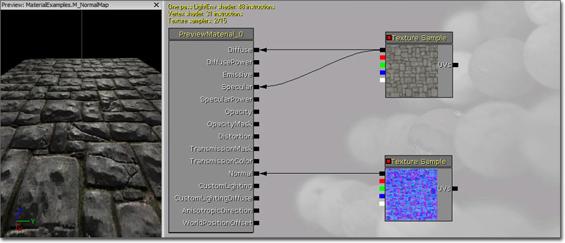
您可以使用法线贴图表面为外观提供更多细节，更清楚地看到光照交互过程。将添加的漫反射贴图连接到 高光 输入通道可以帮助演示这个效果。法线贴图贴图的不同设置
如果您在从您的法线贴图中删除 alpha 通道时遇到麻烦，或者法线贴图没有发出完整细节，那么您可以编辑法线贴图。 如果您想要使用偏移着色器而且您的高度贴图位于法线贴图的 alpha 通道中，那么您需要使用 TC_NormalMap 以外的其他贴图压缩。 您的法线贴图应该被设置为 TC_NormalMapAlpha ，这样它才可以保留 alpha 通道。 使用这种方法后，您可以使用上述的视差角度凹凸贴图着色器。 如果您的法线贴图没有按规定报告光照信息，那么您可能需要更改法线贴图本身的设置。 这是只导入通用贴图贴图而没有进行编辑所导致的结果： 注意，贴图本身没什么深度。 将其应用于一个具有动态光源的场景中后，涂抹表面的过程中会出现很多问题。 在浏览器中使用贴图调整（在内容浏览器中双击法线贴图贴图调出设置窗口）后，可以使最终效果更令人满意。
注意，贴图本身没什么深度。 将其应用于一个具有动态光源的场景中后，涂抹表面的过程中会出现很多问题。 在浏览器中使用贴图调整（在内容浏览器中双击法线贴图贴图调出设置窗口）后，可以使最终效果更令人满意。
 在这里列出了可以使法线贴图效果更好的设置。*SRGB* 复选框没有勾选。将 UnpackMin 的前面三个通道设置为 -1。LOD 组为 - TEXTUREGROUP_WorldNormalMap 。
这些设置为法线贴图营造了深度效果。 您还会注意到使用的是偏移着色器。 将法线贴图上的压缩设置为 TC_NormalMapAlpha 。高度贴图在法线贴图的 alpha 通道中。需要这样设置它。 削减 UnpackMin 设置越多，您可以得到的详细信息越多。 如果您的法线贴图没有显示想得到的详细信息，您可以尝试考虑这样做。 但是，这样做可能会导致变形。
在这里列出了可以使法线贴图效果更好的设置。*SRGB* 复选框没有勾选。将 UnpackMin 的前面三个通道设置为 -1。LOD 组为 - TEXTUREGROUP_WorldNormalMap 。
这些设置为法线贴图营造了深度效果。 您还会注意到使用的是偏移着色器。 将法线贴图上的压缩设置为 TC_NormalMapAlpha 。高度贴图在法线贴图的 alpha 通道中。需要这样设置它。 削减 UnpackMin 设置越多，您可以得到的详细信息越多。 如果您的法线贴图没有显示想得到的详细信息，您可以尝试考虑这样做。 但是，这样做可能会导致变形。
偏移凹凸贴图
 偏��凹凸贴图应该是通过使用有创意的方法修改 UV 坐标置换表面像素使法线贴图中产生的深度错觉进一步深化。 以上是一个完整的平面截图，砖块看上去好像是从表面立起来，甚至在陡峭角上也是如此。
要想知道法线贴图和偏移凹凸贴图之间的区别，请看看下面的内容： 请注意图片中右侧的砖块边缘。 左侧的砖块有凹凸，但是从根本上说还是平的，而右侧的砖块看上去就有实际高度。
偏��凹凸贴图应该是通过使用有创意的方法修改 UV 坐标置换表面像素使法线贴图中产生的深度错觉进一步深化。 以上是一个完整的平面截图，砖块看上去好像是从表面立起来，甚至在陡峭角上也是如此。
要想知道法线贴图和偏移凹凸贴图之间的区别，请看看下面的内容： 请注意图片中右侧的砖块边缘。 左侧的砖块有凹凸，但是从根本上说还是平的，而右侧的砖块看上去就有实际高度。
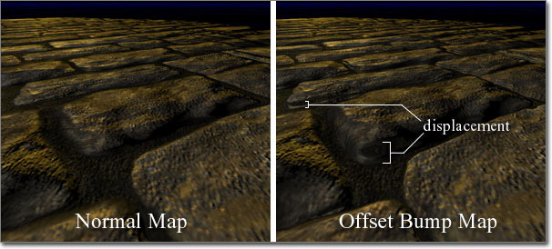
高度贴图
除了您可以在材质中使用的各种各样的通用贴图（漫反射、高光、法线等等）以外，在使用偏移凹凸贴图创建材质的时候，您同时还需要 高度贴图 。高度贴图是灰度贴图，其中的灰色调代表高度。我们的教程中，该信息位于仅用于可视化的单独贴图 alpha 通道中。通常情况下， 高度贴图 都包含在法线贴图贴图的 alpha 通道中。
传输
传输指的是表面可以从背面传输光源。这种效果类似于众所周知的子表面散射 (SSS)，但是远不如真正的 SSS 那么复杂。 这里提供两种可以控制材质传输的输入通道： TransmissionMask 和 TransmissionColor。
这里提供两种可以控制材质传输的输入通道： TransmissionMask 和 TransmissionColor。
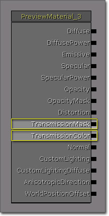
TransmissionMask 输入通道可供自身使用或者与 TransmissionColor 结合使用，而 TransmissionColor 输入通道需要向 TransmissionMask 输入值才能起作用。如果只是将值传送到 TransmissionMask 输入通道，那么这个值可以控制传输的颜色和强度。与 TransmissionColor 输入通道结合使用时，可以用 TransmissionMask 乘以 TransmissionColor 计算总传输。这意味着您可以使用 Constant3Vector 形式将颜色传输到 TransmissionColor，将 常量传输到 TransmissionMask 用来控制传输的强度。边缘光照
轮廓光照或边缘光照是一项在电影或过场动画中常常用到的技术，其中将光照用于照亮角色的轮廓，这样可以使他们从场景中脱颖而出或者使他们成为焦点。虽然使用法线光线可以轻而易举地实现这种效果，但是它需要其他设置和动画使光源跟随角色。在材质中可以实现同样的基础效果，这样可以提供控制特效的更大权限，甚至可以使用它进行其他操作，例如，使角色的外表变得朦胧一些或者只在不带光照的表面上模拟实际的光照，节省性能消耗。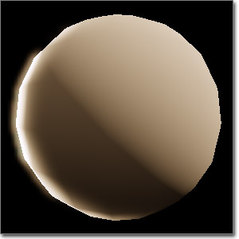
参数化
参数化指的是在材质中使用参数表达式。可以通过材质的实例或者通过代码修改参数。参数化的主要优点之一是您可以创建一个高级材质，其中可以包含您希望材质集合包含的所有功能。在这个高级材质中，某些方面，例如 TextureSamples 和重要的 Constant 以及Constant3Vectors 可以替换为 TextureSampleParameter2D、ScalarParameter 和 VectorParameter 表达式。这样在创建高级材质实例时，可以修改材质的这些方面，创建看起来完全不同的材质，不需要浪费时间或资源从头到尾创建一个新材质。 请参阅 InstancedMaterials 和 MaterialInstanceConstant 页面了解更多信息。示例
光滑
这部分中的示例主要介绍通过使用高光和环境贴图创建不同光滑度类型的表面。遮片
 该表面的外观平坦，即使仍然有一些高光。可以使用它创建不是很光滑的表面，例如，塑料和绘制了遮片的表面。
该表面的外观平坦，即使仍然有一些高光。可以使用它创建不是很光滑的表面，例如，塑料和绘制了遮片的表面。
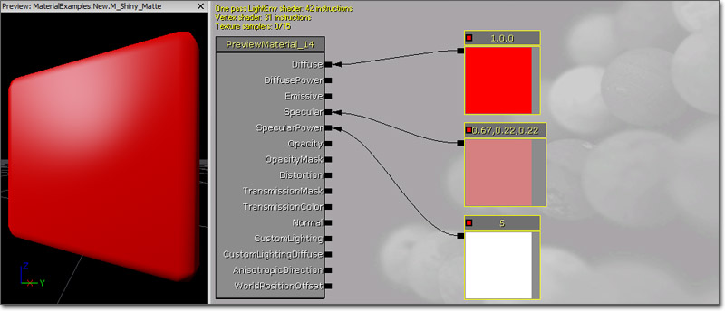
示例中的 Diffuse（漫反射）颜色是亮红色 Constant3Vector (1.0, 0.0, 0.0)，但是可以使用任何颜色或 TextureSample。 SpecularPower 是由 Constant 驱动的，值为 5.0 可以使高光非常分散，而 Specular（高光）颜色是 Constant3Vector，其值为 Diffuse（漫反射）的消退版本 (0.67, 0.22, 0.22)，这个值会使高光变得微弱。亮光
 这个表面的外观非常光滑，高光密集明亮。可以使用它创建任何光滑表面，例如，玻璃表面、磨光的塑料表面和车漆等等。
这个表面的外观非常光滑，高光密集明亮。可以使用它创建任何光滑表面，例如，玻璃表面、磨光的塑料表面和车漆等等。
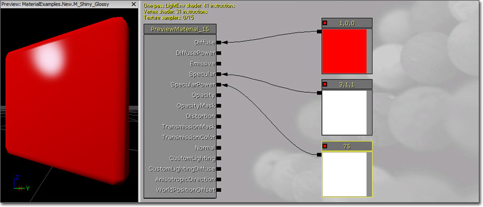
示例中的 Diffuse（漫反射）颜色是亮红色 Constant3Vector (1.0, 0.0, 0.0)，但是同时也可以使用任何颜色或 TextureSample。 SpecularPower 是由 Constant 驱动的，值为 75.0 的时候会使高光非常集中，而 Specular（高光）颜色是 Constant3Vector 时，其值为 Diffuse（漫反射）的过载效果版本 (3.0, 1.0, 1.0)，这个值会使高光变得明亮刺眼。金属表面
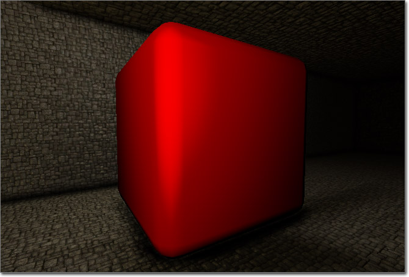
该表面的外观像绸缎一样光滑， 漫反射颜色很暗，高光分散但是很亮。它可以用于创建金属表面或诸如绸缎这样的缎面处理。 该示例中的 Diffuse 颜色为暗红色 Constant3Vector (0.2, 0.0, 0.0)。使用暗色系对于该效果来说非常必要，因为 Specular 颜色必须是表面的真正颜色。如果使用的是 TextureSample，您只需乘以 Constant 来加深它的颜色，最后达到类似的效果。
SpecularPower 由 Constant 控制，值为 2.0 会使高光非常分散，而 Specular（高光）颜色是 Constant3Vector 时，其值为 Diffuse（漫反射）的明亮版本 (1.0, 0.0, 0.0)，这个值会使高光变亮。
该示例中的 Diffuse 颜色为暗红色 Constant3Vector (0.2, 0.0, 0.0)。使用暗色系对于该效果来说非常必要，因为 Specular 颜色必须是表面的真正颜色。如果使用的是 TextureSample，您只需乘以 Constant 来加深它的颜色，最后达到类似的效果。
SpecularPower 由 Constant 控制，值为 2.0 会使高光非常分散，而 Specular（高光）颜色是 Constant3Vector 时，其值为 Diffuse（漫反射）的明亮版本 (1.0, 0.0, 0.0)，这个值会使高光变亮。
Reflection（反应）
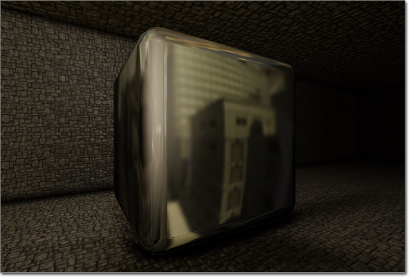
该材质使用的是立方体贴图反射或环境贴图，营造出光滑表面的效果。可以使用它创建玻璃、水、铬合金或者任何其他可以反射的表面。 Diffuse 颜色受环境贴图控制，它使用通过 Transform（Tangent（切线） -> World（世界））传递的 ReflectionVector 作为它的 UV 贴图坐标。环境贴图乘以 Constant 0.375，可以降低反射率。
SpecularPower 值为 2.0 时，高光会变得非常分散，而 Specular 亮度为 0.125 会使高光变得微弱。这样可以使高光亮一点，但是仍然是昏暗的，其余的归反射处理。
Diffuse 颜色受环境贴图控制，它使用通过 Transform（Tangent（切线） -> World（世界））传递的 ReflectionVector 作为它的 UV 贴图坐标。环境贴图乘以 Constant 0.375，可以降低反射率。
SpecularPower 值为 2.0 时，高光会变得非常分散，而 Specular 亮度为 0.125 会使高光变得微弱。这样可以使高光亮一点，但是仍然是昏暗的，其余的归反射处理。
凹凸偏移
要访问 高度贴图 ，创建一个新的 Texture Sample，将包含该 高度贴图 的贴图赋给它。如果使用的是法线贴图的 alpha 通道，将会需要赋该法线贴图给 TextureSample 的一个副本。 您的材质网络应该类似于以下材质之一。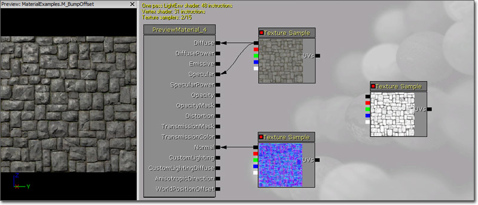
现在在工作区中添加一个 BumpOffset 表达式（按住 B 并左击快捷方式），将其放置在材质中的 heightmap TextureSample 和另一个 TextureSamples 之间。将 heightmap 贴图样本的 alpha 通道输出端（底部输出端）连接到 BumpOffset 的“高度”输入端。 选择 BumpOffset 表达式将会显示它的属性。应该对这些属性进行调整，这样才可以得到最终想得到的效果。- HeightRatio - 凹凸的实际高度和贴图的宽度之间的有效比。 默认值是 .05，也就是说如果将材质的一个瓦片映射为一个 10 ft 正方形，凹凸深度将会显示为大约 10*.05=.5 ft。找到一个适合于您的材质的值。
- ReferencePlane - 这个值在 0 到 1 之间，代表会导致没有贴图坐标偏移的凹凸高度。 默认值 .5 在大多数情况中都适用。 如果需要需要进行调整。
 最终的材质网络应该如上所示。 在该案例中，漫反射材质是作为材质的高光贴图使用，在您的网络中不一定是这种情况。
最终的材质网络应该如上所示。 在该案例中，漫反射材质是作为材质的高光贴图使用，在您的网络中不一定是这种情况。
发光
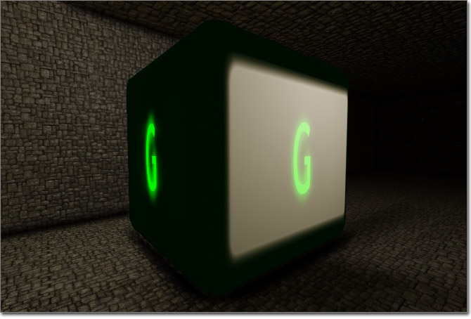
该材质使用 Emissive（自发光）输入通道使表面上的某些部分发光，也就是说它看起来完全被照亮，即使没有光线照射。这种效果可以用于创建光源（例如，在世界中将物理网格物体作为光源的可视表达式）、粒子效果以及应该可以发出光线的任何其他表面。在与 Lightmass 结合使用的时候，实际上可以使用 Emissive（自发光）输入通道散发光将表面本身作为区域光源使用。 (点击获得完整尺寸)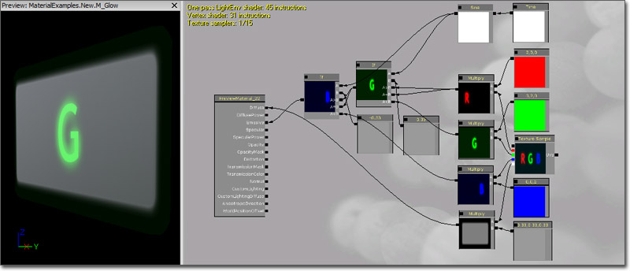
材质的 Diffuse 颜色可以来源于 TextureSample 的 Alpha 通道。 将 TextureSample 的 R、G 和 B 通道都作为单独的蒙板，分别与红色、绿色和蓝色的 Constant3Vectors 相乘。然后通过一系列 If 表达式传递它们，其中这些表达式可以将 Sine 表达式的输出与一些 Constant 值进行比较，这样才可以交替使用这三个颜色。将最终 If 表达式的输出链接到 Emissive 输入通道，生成闪闪发光的字母。透明
这些示例使用 Opacity 或 OpacityMask 输入通道创建透明材质。遮罩的透明物体
 这种材质使用遮罩的透明物体，即完全不透明或者完全透明的表面。可以使用它隐藏部分表面，最后使它看上去比基础几何体更加复杂。例如，树或植物叶子以及其他植被（例如，草坪）通常使用简单的平面，并使用该技术隐藏位于叶子轮廓外部的网格物体部分。
这种材质使用遮罩的透明物体，即完全不透明或者完全透明的表面。可以使用它隐藏部分表面，最后使它看上去比基础几何体更加复杂。例如，树或植物叶子以及其他植被（例如，草坪）通常使用简单的平面，并使用该技术隐藏位于叶子轮廓外部的网格物体部分。
 Diffuse 颜色由漫反射贴图控制。
Specular 颜色可以通过漫反射贴图的绿色通道获取，通过将其与 Constant 4.0 相乘可以扩大强度。
Diffuse 贴图将不透明蒙板放置在 alpha 通道中，将其连接到 OpacityMask 输入通道。在材质的属性中将混合模式设置为 BLEND_Masked，这样可以使用 OpacityMask，最后只有不透明蒙板为白色（或者的那部分材质可见ion of the material where the opacity mask is white (或者确切地说，有一个比 Opacity Mask Clip Value 更大的值）。
将法线贴图连接到法线输入通道，增加光照的细节。
SoftMasked 混合模式的最终效果与此类似，设置相同。
Diffuse 颜色由漫反射贴图控制。
Specular 颜色可以通过漫反射贴图的绿色通道获取，通过将其与 Constant 4.0 相乘可以扩大强度。
Diffuse 贴图将不透明蒙板放置在 alpha 通道中，将其连接到 OpacityMask 输入通道。在材质的属性中将混合模式设置为 BLEND_Masked，这样可以使用 OpacityMask，最后只有不透明蒙板为白色（或者的那部分材质可见ion of the material where the opacity mask is white (或者确切地说，有一个比 Opacity Mask Clip Value 更大的值）。
将法线贴图连接到法线输入通道，增加光照的细节。
SoftMasked 混合模式的最终效果与此类似，设置相同。
半透明
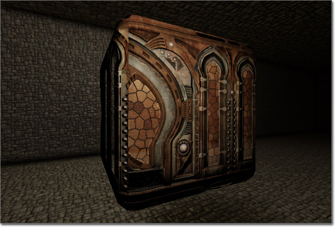
该材质可以使用半透明创建不完全透明或不透明的表面，但是不透明的程度有所不同。 (点击获得完整尺寸)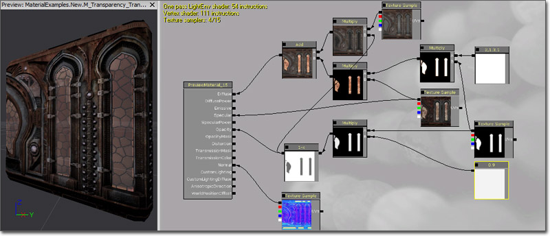
Diffuse 颜色是漫反射贴图是各个实体部分漫反射贴图的组合，并且利用通过使用 Multiply 和 Constant3Vector 表达式进行放大和着色的高光贴图，为窗口提供颜色。Mask 用于分离这两个部分，然后在将它们连接到 Diffuse 输入通道之前与 Add 表达式相结合。 Specular 颜色和强度由高光贴图进行控制。 Opacity 由同样适用于通过使用 OneMinus 表达式倒置的 Diffuse 颜色的蒙板进行控制。 将法线贴图连接到法线输入通道，增加光照的细节。受深度影响的透明度
 该材质演示了深度计算的使用情况，根据表面距离位于它后面的表面的距离，表面的透明度有所不同。这与 DepthBiasAlpha 表达式所提供的操作类似，前提是它完全可以调整。它在创建水材质的时候非常见效，因为在靠近海岸的时候它可以模拟水的自然面貌。
(点击获得完整尺寸)
该材质演示了深度计算的使用情况，根据表面距离位于它后面的表面的距离，表面的透明度有所不同。这与 DepthBiasAlpha 表达式所提供的操作类似，前提是它完全可以调整。它在创建水材质的时候非常见效，因为在靠近海岸的时候它可以模拟水的自然面貌。
(点击获得完整尺寸)
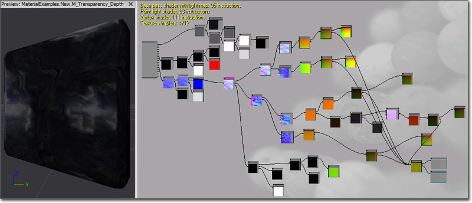
Diffuse 颜色由对比度降低并且明显变暗的环境贴图控制。 Opacity 只由自定义深度计算控制。当前像素的深度，使用 PixelDepth 表达式表示，已经从它后面的像素的深度中减去，使用 DestDepth 表达式表示。然后用最后的值除以 Constant 值 192.0 指定的参照深度。这个值表示表面变得完全不透明时的深度差。这样可以将结果限定在理想范围内。对于该示例，最后的范围保留为默认的 [0, 1]，但是在您希望表面永远不会完全不透明或完全透明的情况下可以使用其他值。 这个表面的 Normals 是平移法线贴图网络十分复杂的结果，这样可以营造波状外观。折射
 该材质可以使用透明和 Distortion 输入通道模拟光线穿过表面时产生的折射现象。这种效果可以用于创建玻璃或水表面以及诸如流或热波这样的粒子效果。
(点击获得完整尺寸)
该材质可以使用透明和 Distortion 输入通道模拟光线穿过表面时产生的折射现象。这种效果可以用于创建玻璃或水表面以及诸如流或热波这样的粒子效果。
(点击获得完整尺寸)
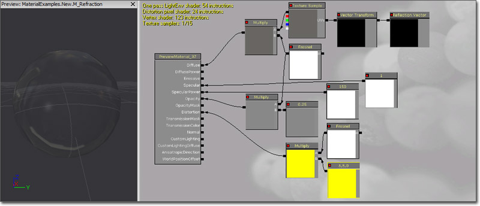
Diffuse 颜色通过环境贴图乘以 指数 为 0.5 的 Fresnel 表达式控制，这样当表面远离相机的时候可以使反射逐渐变得更加明显。 SpecularPower 由 Constant 控制，值为 150.0 会使高光非常集中，而 Specular 颜色是 Constant 时，值为 1.0 会使高光非常亮。 Opacity 由同一个 Fresnel 表达式控制，将其与 Constant 0.75 相乘。 Distortion 输入通道值可以通过将值为 (5.0, 5.0, 0.0) 的 Constant3Vector 与 指数 为 1.0 的 Fresnel 相乘计算得到。子表面散射
 该材质可以使用 Transmission 输入通道模拟子表面散射效果。这项技术适用于创建皮肤、蜡烛或其他不透明的材质类型，但是背面的光线可以透过来显示。
该材质可以使用 Transmission 输入通道模拟子表面散射效果。这项技术适用于创建皮肤、蜡烛或其他不透明的材质类型，但是背面的光线可以透过来显示。
 Diffuse 颜色由 Constant3Vector 控制，但是可以使用的 TextureSample 由所创建的材质决定。
SpecularPower 由 Constant 控制，值为 25.0 会使高光非常集中，而 Specular 颜色是 Constant 时，值为 0.5 会使高光非常微弱。
该示例中的 TransmissionMask 有一个 Constant3Vector，Diffuse 颜色加深。它还可以作为 Diffuse 颜色的 TextureSample。
Diffuse 颜色由 Constant3Vector 控制，但是可以使用的 TextureSample 由所创建的材质决定。
SpecularPower 由 Constant 控制，值为 25.0 会使高光非常集中，而 Specular 颜色是 Constant 时，值为 0.5 会使高光非常微弱。
该示例中的 TransmissionMask 有一个 Constant3Vector，Diffuse 颜色加深。它还可以作为 Diffuse 颜色的 TextureSample。
细节
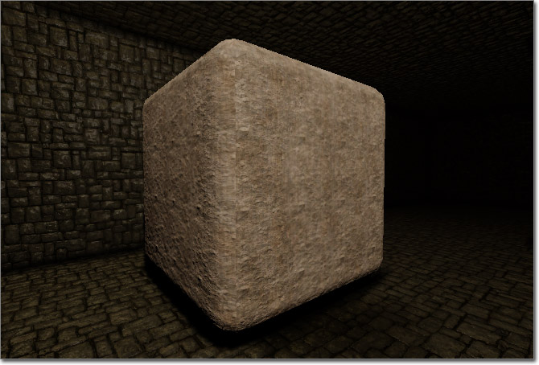
该材质将多个漫反射和法线贴图相结合，一个显示远处较大的细节，一个显示近处的小细节。它通常用在石头、岩石或混凝土材质上。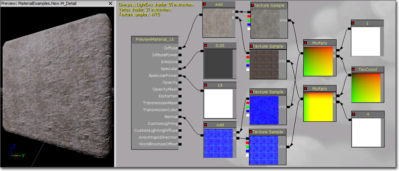
将一个单独的 TextureCoordinate 表达式与两个 Constants 相乘，一个值为 0.5，另一个值为 4.0，将其连接到漫反射和法线贴图的 UVs 输入。将与 0.5 相乘的 TextureCoordinate 连接到将要供较大的远处细节使用的漫反射和法线贴图 TextureSamples 的 UVs 输入。将与 4.0 相乘的 TextureCoordinate 连接到供小的近处细节使用的漫反射和法线贴图 TextureSamples 的 UVs 输入。使用 Add 表达式将这两种漫反射 TextureSamples 结合起来，然后将其连接到 Diffuse 输入通道。再使用一个 Add 表达式将这两个法线贴图 TextureSamples 结合起来，然后将其连接到 Normal 输入通道。 该示例主要针对的是混凝土材质，所以高光微弱并且非常分散。动画处理 UV 坐标
这些示例演示了通过使用 Panner 和 Rotator 表达式对贴图的 UV 坐标进行动画处理的各种方法。旋转
(鼠标悬停在图片上查看动画效果)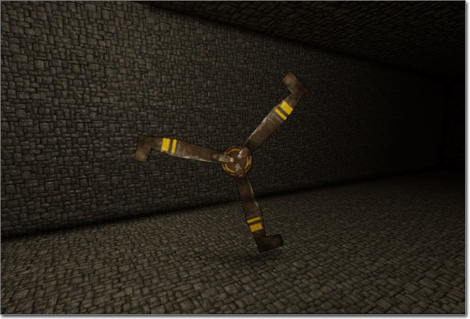

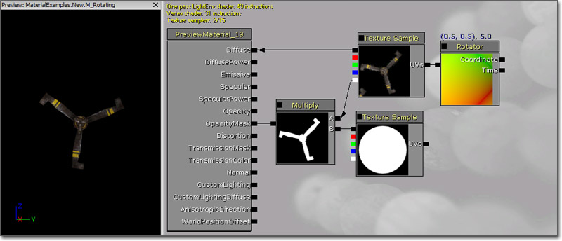
将 速度 为 5 的 Rotator 连接到漫反射 TextureSample，将其输出端连接到材质节点的 Diffuse 输入通道。 漫反射贴图的 Alpha 通道中包含不透明蒙板。将它与另一个圆形蒙板相乘，这样可以清除旋转贴图的无关可视部分（例如，旋转材质会包围的角）。将 Multiply 的结果连接到 OpacityMask 输入通道，并使用 BLEND_Masked 混合模式。平移与变形
(鼠标悬停在图片上查看动画效果)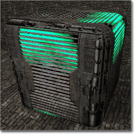
 Diffuse 通道可以用于创建平移和蒙板效果，还可以为木箱提供基础材质。直接传送到 Diffuse 通道的是可以将平移效果与这个栅格相结合的 Linear Interpolate Modifier（线性插入修改器）。
Diffuse 通道可以用于创建平移和蒙板效果，还可以为木箱提供基础材质。直接传送到 Diffuse 通道的是可以将平移效果与这个栅格相结合的 Linear Interpolate Modifier（线性插入修改器）。
 将基础栅格贴图（如上图所示）传送到 Linear Interpolate Modifier 的 A 通道中，其中将 BumpOffset 传送到基础贴图的 Texture Sample 的 Coordinates 通道中。BumpOffset 可以创建贴图遮挡自身的效果。
在 LinearInterpolate 的 B 通道中可以创建平移主射流的效果。从 Modifiers 链最右边开始的是被导入到像彩云一样的 TextureSample 的 Panner，这个平移器可以使它在 X 方向上移动，速度为 0.2。下面您可以看到在 Texture Sample 中用到的贴图。
将基础栅格贴图（如上图所示）传送到 Linear Interpolate Modifier 的 A 通道中，其中将 BumpOffset 传送到基础贴图的 Texture Sample 的 Coordinates 通道中。BumpOffset 可以创建贴图遮挡自身的效果。
在 LinearInterpolate 的 B 通道中可以创建平移主射流的效果。从 Modifiers 链最右边开始的是被导入到像彩云一样的 TextureSample 的 Panner，这个平移器可以使它在 X 方向上移动，速度为 0.2。下面您可以看到在 Texture Sample 中用到的贴图。
 然后使用 ComponentMask 只将红色和绿色部分传送到 Add 表达式中。可以使用 Add 表达式将 SpeedX 为 0.0 和 SpeedY 为 0.2 的 Panner 添加到 Panning Texture Sample 的 R 和 G 部分中。这个 Add 表达式的结果是它将 Panner 视作是贴图并将该 Texture 的颜色添加到被传送到 Add 表达式的 B 通道的贴图。这是因为 Material Editor 不区分颜色和数量。
现在，我们会看到在将最后的 Add 表达式传送到简单 Beam Texture 的 UVs 中时使用贴图作为数量值的反效果。通过将这个复杂的 Modifiers 系列传送到另一个 Sample Texture 的 UVs 中，结果贴图发生了变形现象并有所变化，最后它移动得更加规律，整个贴图曲曲折折地波动。下面您可以看到基础贴图和经过所有 Modifiers 改动后的贴图之间的对比结果。
然后使用 ComponentMask 只将红色和绿色部分传送到 Add 表达式中。可以使用 Add 表达式将 SpeedX 为 0.0 和 SpeedY 为 0.2 的 Panner 添加到 Panning Texture Sample 的 R 和 G 部分中。这个 Add 表达式的结果是它将 Panner 视作是贴图并将该 Texture 的颜色添加到被传送到 Add 表达式的 B 通道的贴图。这是因为 Material Editor 不区分颜色和数量。
现在，我们会看到在将最后的 Add 表达式传送到简单 Beam Texture 的 UVs 中时使用贴图作为数量值的反效果。通过将这个复杂的 Modifiers 系列传送到另一个 Sample Texture 的 UVs 中，结果贴图发生了变形现象并有所变化，最后它移动得更加规律，整个贴图曲曲折折地波动。下面您可以看到基础贴图和经过所有 Modifiers 改动后的贴图之间的对比结果。

|

|
|
|
|
|
 将这些 Modifier 链一起链接到 Linear Interpolate Modifier 中，然后传送到 Diffuse 通道中，Material 会显示一个栅格贴图，在栅格蒙板后面是一个暗绿色有规律的主射流在流动。
Emissive 通道只用于提亮栅格蒙板后面的绿色主射流。要达到这种效果，需要将传送到 Linear Interpolate B 通道中的 Multiply Modifier 同时传送到第二个 Multiply Modifier 中，并与一个 Constant 相乘。为了制作绿色主射流额外，将 Constant R 值设置为 20.0。然后将结果 Multiply Modifier 传送到 Material 的 Emissive 通道中。
通过 Sample Texture Modifier 将相同的基础贴图应用到可以用于 Diffuse 通道中栅格的 Specular 通道，可以减少光源散发出来的光。
在 Normal 通道中就是常用的 BumpOffset 法线贴图。它可以创建栅格实际遮挡本身的效果，根据观察者的位置效果会有所不同。将下面显示的法线贴图链接到 BumpOffest，HeightRatio 和 ReferencePlane 值为默认值，然后将 BumpOffset 链回到法线贴图的另一个实例中以及漫反射通道中的基础贴图。最后，将法线贴图的字符串和 BumpOffset Modifier 传递到最终材质的 Normal 通道中。
在这里您可以看到在该材质中使用的基础法线贴图。
将这些 Modifier 链一起链接到 Linear Interpolate Modifier 中，然后传送到 Diffuse 通道中，Material 会显示一个栅格贴图，在栅格蒙板后面是一个暗绿色有规律的主射流在流动。
Emissive 通道只用于提亮栅格蒙板后面的绿色主射流。要达到这种效果，需要将传送到 Linear Interpolate B 通道中的 Multiply Modifier 同时传送到第二个 Multiply Modifier 中，并与一个 Constant 相乘。为了制作绿色主射流额外，将 Constant R 值设置为 20.0。然后将结果 Multiply Modifier 传送到 Material 的 Emissive 通道中。
通过 Sample Texture Modifier 将相同的基础贴图应用到可以用于 Diffuse 通道中栅格的 Specular 通道，可以减少光源散发出来的光。
在 Normal 通道中就是常用的 BumpOffset 法线贴图。它可以创建栅格实际遮挡本身的效果，根据观察者的位置效果会有所不同。将下面显示的法线贴图链接到 BumpOffest，HeightRatio 和 ReferencePlane 值为默认值，然后将 BumpOffset 链回到法线贴图的另一个实例中以及漫反射通道中的基础贴图。最后，将法线贴图的字符串和 BumpOffset Modifier 传递到最终材质的 Normal 通道中。
在这里您可以看到在该材质中使用的基础法线贴图。
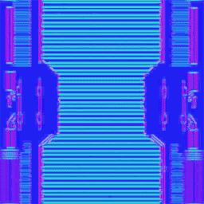
面效果
这些示例演示了基于方向的效果，例如，根据观察该材质的方向不同，所产生的效果也不同。两种色调
 该材质可以模拟两种色调的表面，即从某一方向观察时是一种颜色，而从相反的方向观察时是另一种颜色。该表面也是高Glossy（密度）表面，而且可以使用环境贴图进行反射。与某些车漆类似。
(点击获得完整尺寸)
该材质可以模拟两种色调的表面，即从某一方向观察时是一种颜色，而从相反的方向观察时是另一种颜色。该表面也是高Glossy（密度）表面，而且可以使用环境贴图进行反射。与某些车漆类似。
(点击获得完整尺寸)
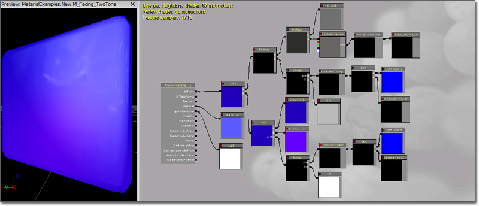
Diffuse 颜色将两种色调效果和环境贴图相结合。将环境贴图与值为 0.1625 的 Constant 相乘加深其颜色。然后再乘以与幕后进行的基础 Specularity 计算相似的计算结果。将 LightVector 和 ReflectionVector 传送到 DotProduct 中。然后使用 ConstantClamp 限定结果并将其传送到 Power 作为 基础 输入值，其中 Exp 输入值为 0.5。整个计算的结果是，当反射光从光源射入的表面点移开时值为 1.0，如果反射光与光源垂直，那么这个值会降为 0.0，这就是高光的工作原理。然后将这个值与环境贴图相乘。 两种色调效果可以对上述反射效果使用同样的设置。将 LightVector 和 ReflectionVector 传送到 DotProduct 中。然后使用 ConstantClamp 限定结果并将其传送到 Power 作为 基础 输入值，其中 Exp 输入值为 3.0。整个计算的最后结果是，如果观察这个表面时的角度与通过光源射入照亮表面时的角度相同，那么这个值为 1.0，如果观察的表面与光源垂直，那么这个值为 0.0。将这个值作为 LinearInterpolate 表达式的 Alpha 输入值。LinearInterpolate 的 A 和 B 输入端，每个都连接着一个 Constant3Vector；一个是深蓝色 (0.01, 0.0, 0.5)，另外两个分别为亮蓝/紫色 (0.125, 0.0, 1.25)。如果从光源的方向观察表面，那么将会使用紫色，如果从与光源垂直的放观察表面，则使用蓝色。 这样使用 Add 表达式将环境贴图网络和两种色调网络结合起来，然后连接到材质节点的 Diffuse 输入通道。 SpecularPower 由 Constant 控制，值为 1.25 会使高光分散，而 Specular（高光）颜色是 Constant3Vector，其值为微弱的紫色 (0.1, 0.0, 1.2)，这个值会使高亮变亮容易察觉，但是并不强烈。轮廓光照
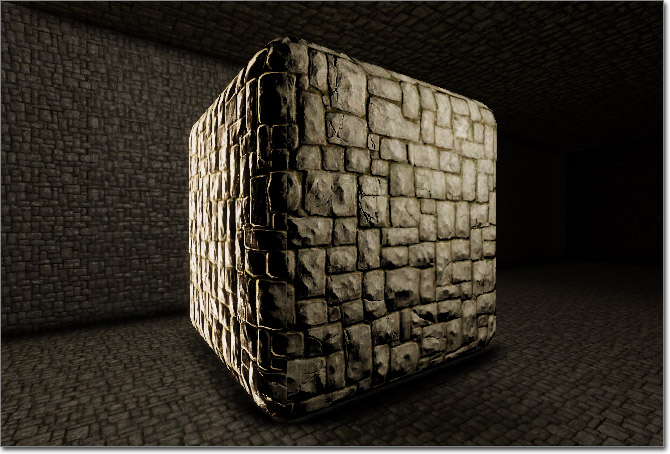
该材质演示了通过创建“硬编码”光照制作边缘光照效果。该技术的变体可以在不带光照的材质中用来模拟光照，使材料对渲染不那么敏感，外观仍然可以被照亮。网格物体粒子有时会在照亮消耗大量性能的时候采用这种效果。 (点击获得完整尺寸) Diffuse 颜色只受 TextureSample 控制。
Emissive 颜色由主要效果控制。将值为 (0.0, 0.0, 1.0) 的 Constant3Vector 从 Tangent 转换为 World 坐标，必须将表面的切线法线转换为世界法线。将它与值为 (1.0, 0.0, 0.0) 的另一个 Constant3Vector 一起连接到 DotProduct。第二个 Constant3Vector 代表的是光源方向。将 DotProduct 的这个结果限定在 [0, 1]，然后通过将 Constant 5.0 连接到 Exp 输入端穿过 Power。这个值可以控制有多少是闲置的，可以供光照效果使用。然后将这个结果与 指数 为 10 的 Fresnel 相乘，并将其连接到 Normal 输入端，使光照只出现在网格物体边缘周围，即使是在直接观察被照亮的面时。下一步，将这个值与代表光源颜色的 Constant3Vector 相乘。接下来，再乘以漫反射贴图。最后，将这个值与可以控制边缘光照强度的 Constant 值 10.0 相乘。将最终结果链接到 Emissive 输入通道。
该表面的 Normals 由采用了法线贴图的 TextureSample 控制。
Diffuse 颜色只受 TextureSample 控制。
Emissive 颜色由主要效果控制。将值为 (0.0, 0.0, 1.0) 的 Constant3Vector 从 Tangent 转换为 World 坐标，必须将表面的切线法线转换为世界法线。将它与值为 (1.0, 0.0, 0.0) 的另一个 Constant3Vector 一起连接到 DotProduct。第二个 Constant3Vector 代表的是光源方向。将 DotProduct 的这个结果限定在 [0, 1]，然后通过将 Constant 5.0 连接到 Exp 输入端穿过 Power。这个值可以控制有多少是闲置的，可以供光照效果使用。然后将这个结果与 指数 为 10 的 Fresnel 相乘，并将其连接到 Normal 输入端，使光照只出现在网格物体边缘周围，即使是在直接观察被照亮的面时。下一步，将这个值与代表光源颜色的 Constant3Vector 相乘。接下来，再乘以漫反射贴图。最后，将这个值与可以控制边缘光照强度的 Constant 值 10.0 相乘。将最终结果链接到 Emissive 输入通道。
该表面的 Normals 由采用了法线贴图的 TextureSample 控制。
仿真 HDR
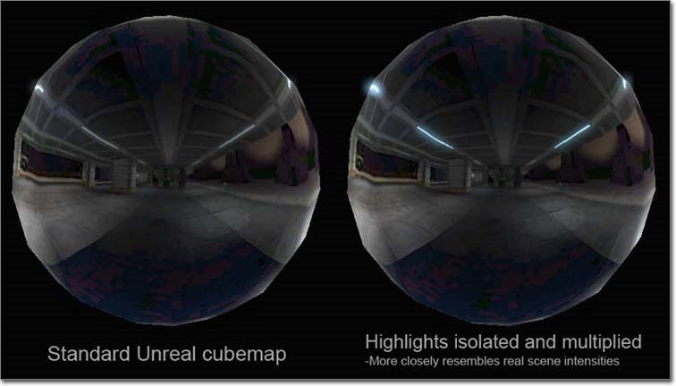
诸如上面图片所示的具有仿真 HDR 光照的立方体贴图，可以通过使用下面的修改器和贴图轻松创建。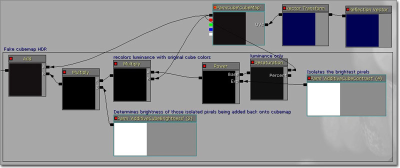
要制作这种效果，首先选取一个 立方体样本/反射 贴图，隔离最明亮的像素，添加一个可以修改隔离出来的像素的控件，这样可以将这些像素重新添加到基础立方体贴图顶部。使用这项设置后，立方体贴图本身将会变暗，但是仍然可以控制高光亮度。 它会重复现实世界中发射的过程： 被反射的明亮物体还是明亮的，即使是在半透明或暗表面上反射。为了使它适用于从编辑器内部采样的立方体贴图，您需要禁用立方体贴图样本上的 SRGB 标志。您可以不管它，但是您将看到一个非常暗差异非常明显的反射。 使用这种方法，您首先去除立方体贴图的饱和度调整命令，隔离其中的明亮像素，然后将这个结果与初始立方体贴图相乘，在最终将其添加到它本身之前重新对其进行着色。这样可以避免引入任何错误的颜色信息，而且事实上只会影响亮度输出。雪
 该材质可以模拟可以闪光的雪花材质。
(点击获得完整尺寸)
该材质可以模拟可以闪光的雪花材质。
(点击获得完整尺寸)
 首先，在 RBG 通道中创建一个 512x512 闪光贴图（黑色背景，分散的白色 1 像素大小的圆点），并将 Alpha 通道中的蒙板贴图作为闪光效果的蒙板 (在 Photoshop 中使用 Cloud 过滤器，而且经过严格对比）。此外，如果您的编辑器版本支持直接导入 DDS 贴图，那么您可以手动创建闪光贴图的 mipmap 关卡，使其在不同的距离都可以正常工作。这些 mipmap 关卡只是剪切粘贴到下一个 mipmap 关卡等等的初始闪光贴图的一部分。
在 Material 编辑器中，使用 Multiply 节点混合 RGB 和 Alpha 通道（它们都用作单独的节点，其中平铺显示属性不同）。RBG 通道/节点具有连接到它的 TextureCoordinate 节点，这样您就可以调整它的平铺显示方式。Alpha 通道/节点具有一个 ReflectionVector，通过将 ComponentMask 插入到其内部，只可以使用 R 和 G 通道，蒙板的大小恒定，不受距离影响。最后，将 Multiply 节点与 ScalarParameter? 相乘，这样您就可以随意更改闪光的亮度。
中这其中的主要问题是要使闪光效果可以作用于不同距离。您将会看到手动创建 mipmaps 比使用 Pixeldepth 得到的效果好很多，而材质本身需要的节点会更少。
首先，在 RBG 通道中创建一个 512x512 闪光贴图（黑色背景，分散的白色 1 像素大小的圆点），并将 Alpha 通道中的蒙板贴图作为闪光效果的蒙板 (在 Photoshop 中使用 Cloud 过滤器，而且经过严格对比）。此外，如果您的编辑器版本支持直接导入 DDS 贴图，那么您可以手动创建闪光贴图的 mipmap 关卡，使其在不同的距离都可以正常工作。这些 mipmap 关卡只是剪切粘贴到下一个 mipmap 关卡等等的初始闪光贴图的一部分。
在 Material 编辑器中，使用 Multiply 节点混合 RGB 和 Alpha 通道（它们都用作单独的节点，其中平铺显示属性不同）。RBG 通道/节点具有连接到它的 TextureCoordinate 节点，这样您就可以调整它的平铺显示方式。Alpha 通道/节点具有一个 ReflectionVector，通过将 ComponentMask 插入到其内部，只可以使用 R 和 G 通道，蒙板的大小恒定，不受距离影响。最后，将 Multiply 节点与 ScalarParameter? 相乘，这样您就可以随意更改闪光的亮度。
中这其中的主要问题是要使闪光效果可以作用于不同距离。您将会看到手动创建 mipmaps 比使用 Pixeldepth 得到的效果好很多，而材质本身需要的节点会更少。
湿地
(鼠标悬停在图片上查看动画效果)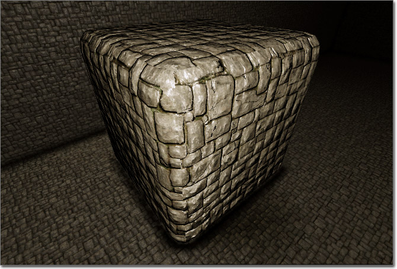